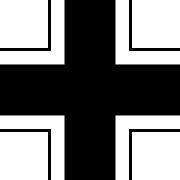
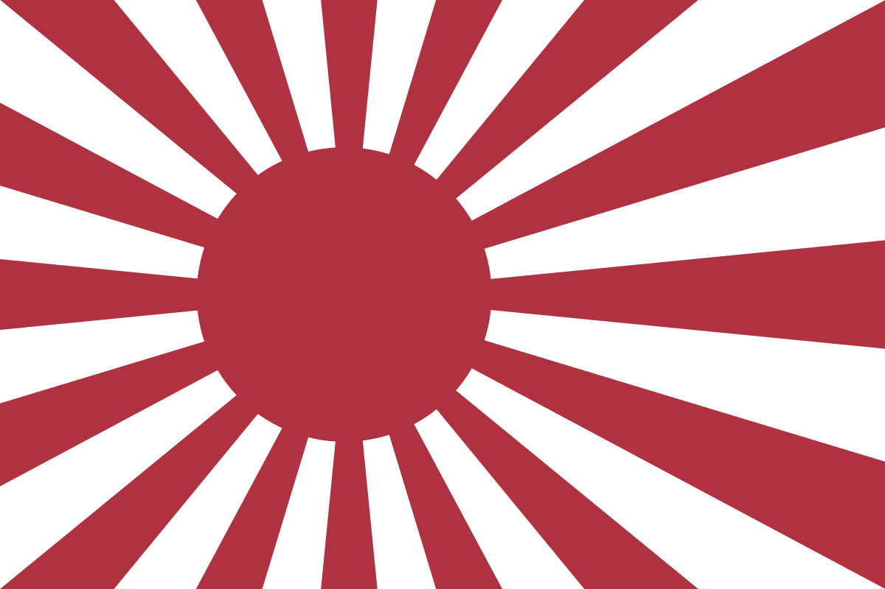
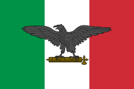

|
|
El papel del Reino Unido de Gran Bretaña e Irlanda del Norte durante la Segunda Guerra Mundial fue muy trascendental. El primer ministro británico durante gran parte de la contienda, Winston Churchill, tuvo una postura firme y clara, en la cual jamás se rendiría y lucharía hasta el final por la derrota del enemigo. De hecho, fue el único país que luchó en toda la guerra, desde el 1 de septiembre de 1939 hasta el 2 de septiembre de 1945. |
|  | El Heer (ejército, en alemán) eran las fuerzas terrestres de la Wehrmacht, las Fuerzas Armadas alemanas desde 1935 a 1945. La Wehrmacht también incluía a la Kriegsmarine (Marina de guerra) y la Luftwaffe (Arma Aérea). Durante la Segunda Guerra Mundial, un total de unos 15 millones de soldados sirvieron en el Heer, de los cuales murieron unos 4 millones. Separado del Heer, el Waffen-SS era una fuerza militar multi-étnica y multi-nacional del Tercer Reich. Creciendo desde tres regimientos a más de 38 divisiones durante la Segunda Guerra Mundial, sirvió al lado del Heer pero formalmente nunca fue parte de este. |
|  | El Imperio del Japón entró en la Segunda Guerra Mundial lanzando una ofensiva sorpresa que se inició con el ataque a Pearl Harbor el 7 de diciembre de 1941. En el transcurso de siete horas hubo ataques japoneses coordinados contra Filipinas, Guam y la Isla Wake, controladas en ese entonces por Estados Unidos, además de otros ataques contra el Imperio Británico en Malaya, Singapur y Hong Kong. Los objetivos estratégicos de la ofensiva eran paralizar la flota estadounidense en el Pacífico, capturar yacimientos petrolíferos en las Indias Orientales Holandesas y expandir los límites del Imperio Japonés para crear un formidable perímetro defensivo alrededor del territorio recién adquirido. |
|  | La participación de Italia en la Segunda Guerra Mundial tuvo dos fases bien diferenciadas. Primero, a partir de junio de 1940, bajo el mando del dictador Benito Mussolini, luchó al lado de la Alemania nazi de Adolf Hitler contra Francia, el Reino Unido y los demás aliados, Estados Unidos. De igual forma en 1940 Italia firmó el pacto tripartito o mejor conocido como el pacto eje Berlín, Roma, Tokio junto con la Alemania nazi en la que se adhería el Imperio del Japón. En la segunda fase, a partir del derrocamiento de Mussolini en el verano de 1943, el rey Víctor Emmanuel III y su nuevo gobierno firmaron un armisticio y se alinearon con los aliados, mientras los alemanes se hacían con el control de gran parte del país, donde crearon una república títere presidida por Mussolini. Así, de 1943 a 1945 hubo tropas italianas en ambos bandos del conflicto, y a veces lucharon unas contra otras en lo que vino a ser una guerra civil dentro de la segunda guerra mundial. |